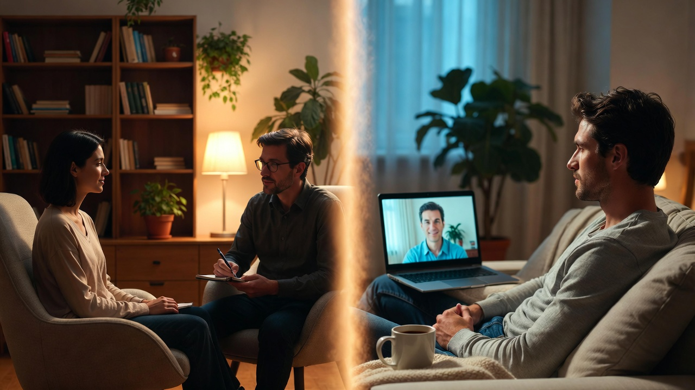

С развитием технологий всё больше психологов ведут приёмы онлайн. Но подходит ли это всем? И действительно ли онлайн-формат уступает очному? Давайте разберёмся без предрассудков.

Сравнение форматов
| Критерий | Онлайн | Офлайн |
|---|---|---|
| Доступность | Из любой точки мира с интернетом | Только в городе приёма |
| Время | Экономия на дороге | +30-60 минут на дорогу |
| Комфорт | В привычной обстановке дома | Нужно адаптироваться к кабинету |
| Выбор специалиста | Весь мир | Только ваш город |
| Приватность | Зависит от условий дома | Гарантирована в кабинете |
| Эффективность | Доказана исследованиями | Доказана исследованиями |
| Стоимость | Часто ниже | +аренда кабинета |
Когда онлайн-формат подходит идеально
- ✅ Вы живёте не в крупном городе — доступ к хорошим специалистам ограничен
- ✅ Плотный график — нет времени на дорогу
- ✅ Агорафобия или социальная тревога — выход из дома вызывает стресс
- ✅ Физические ограничения — проблемы с мобильностью
- ✅ Командировки/путешествия — можно не прерывать терапию
- ✅ Предпочитаете писать — переписка в Telegram для кого-то комфортнее
Когда лучше выбрать офлайн
- ⚠️ Тяжёлые расстройства — требуется очная оценка состояния
- ⚠️ Нет приватного пространства дома — соседи, дети, родственники постоянно рядом
- ⚠️ Неустойчивый интернет — постоянные обрывы мешают процессу
- ⚠️ Потребность в телесной работе — некоторые техники требуют присутствия
- ⚠️ Важна "особая атмосфера" кабинета — для вас это часть терапии
Как проходит онлайн-консультация
Форматы
- Видео (Zoom, Skype) — максимально приближено к очному формату, видно эмоции и мимику
- Аудио — если видео вызывает дискомфорт или плохой интернет
- Текст (Telegram, WhatsApp) — асинхронно, удобно для размышлений между сообщениями
Что нужно для комфортной онлайн-сессии
- Тихое место, где вас не потревожат
- Стабильный интернет — проверьте заранее
- Наушники — для приватности и лучшего звука
- Бумага и ручка — для заметок
- Стакан воды
Научные данные
Мета-анализ 2021 года (Journal of Anxiety Disorders) показал: онлайн-КПТ так же эффективна, как очная при тревожных расстройствах и депрессии. Результаты сохраняются в долгосрочной перспективе.
Мой опыт работы онлайн
Я работаю в основном онлайн — с клиентами из разных городов России, а также из-за рубежа (Германия, Израиль, ОАЭ). Использую Zoom и Telegram.
Что говорят клиенты:
- "Не нужно тратить час на дорогу — могу записаться в обеденный перерыв"
- "В своём кресле чувствую себя безопаснее, чем в незнакомом кабинете"
- "Запись сессии помогает освежить в памяти важные моменты" (по согласованию)
Как выбрать формат
Задайте себе вопросы:
- Есть ли рядом со мной подходящий специалист?
- Есть ли у меня место для приватной беседы дома?
- Как я себя чувствую при видеозвонках?
- Готов ли я тратить время на дорогу?
И помните: можно комбинировать. Например, начать онлайн, а первую сессию провести очно для знакомства. Или наоборот — если переезжаете, продолжить онлайн с тем же психологом.
Ещё сомневаетесь?
Запишитесь на консультацию — обсудим, какой формат подойдёт именно вам.
Записаться на консультациюИтог
Онлайн-психотерапия — не "хуже", а другой формат со своими преимуществами. Для многих запросов он так же эффективен, как очный приём. Главное — ваш комфорт и качество работы специалиста, а не формат.